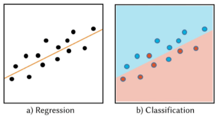
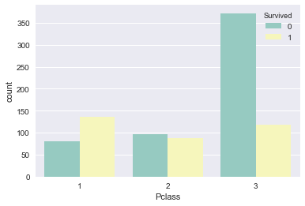
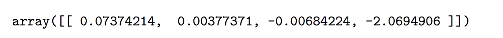
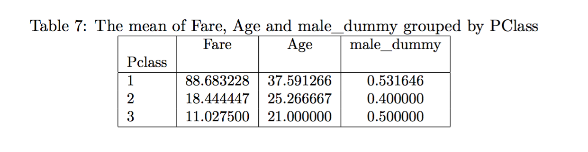
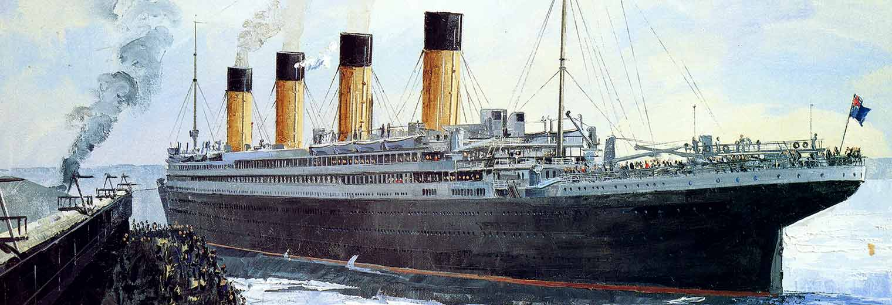

Profielwerkstuk Wiskunde D
Myrthe Boone
Created: 2019-02-06 Wed 20:50
RMS TITANIC: Machine learning from disaster
Profielwerkstuk Wiskunde D
7 februari 2019
Myrthe Boone 6E
Figure 1: RMS Titanic
Doodle
Inhoudsopgave
- Introductie
- Wat is machine learning?
- Mijn onderzoek
- Algoritmes
- Hoofd- en deelvragen
- Resultaten
- Conclusie
- Discussie
- Afsluiting
Introductie
Waarom dit onderwerp?
- Meer weten over machine learning en programmeren in Python
- Machine learning is overal om ons heen
- Organiseren en analyseren van de werkelijkheid
- TU Eindhoven
Titanic
- Voorspellen welke groep passagiers een grotere kans had om te overleven.
- 'Vrouwen en kinderen eerst' beleid
- Geluk, geslacht, leeftijd, klasse en prijs betaald voor een ticket

Figure 2: Deck Titanic
Wat is machine learning?
- Zonder specifiek geprogrammeerd te zijn voor de taken
- Voorbeeld: spam emails, Google zoekopdrachten
Soorten machine learning
- Supervised, unsupervised en reinforcement learning
- Unsupervised: Correcte labels zijn niet gegeven
- Supervised: Computer weet welke categorieën er zijn
- Supervised learning kan ingedeeld worden in regression en classification

Figure 4: Machine learning
Soorten machine learning
- Classification: categorieën
- Regression: continue variabelen

Figure 5: Classification vs. Regression
Soorten machine learning
- Titanic is supervised learning
- Binary classification
- 1 = overleefd
- 0 = niet overleefd
Mijn onderzoek: algoritmes
Werkplan
- We splitsen onze dataset in een training en een test set
- We trainen / fitten ons model op de training set
- We voorspellen op de test set
- Dus we gebruiken de gegevens van de passagiers (leeftijd, geslacht, prijs betaald voor een ticket, klasse)
Logistic Regression
- Gebaseerd op de logistische functie
- Grenswaarde \(p>0.5\), passagier heeft het overleefd
\begin{equation}
\label{eq:2}
\sigma(y) = \frac{e^y}{1+e^y}
\end{equation}
- Vier variabelen dus \(y\) is in dit geval:
\begin{equation}
y=a_1x_1+a_2x_2+a_3x_3+a_4x_4+b+\varepsilon_{i}
\end{equation}

Figure 6: Logistische functie
Hoofd- en deelvragen
- Is het mogelijk een nauwkeurige voorspelling te maken of de passagiers aan boord van de Titanic het hebben overleefd met behulp van informatie over geslacht, klasse, leeftijd en prijs betaald voor een ticket?
- Wat is de invloed van geslacht op de overlevingskans?
- Wat is de invloed van klasse op de overlevingskans?
- Wat is de invloed van leeftijd op de overlevingskans?
- Wat is de invloed van prijs betaald voor een ticket op de overlevingskans?
Resultaten
Dataset verkennen
- Begonnen met plots maken, dataset ontdekken

Figure 7: Plot van reisklasse
Resultaten
- Coëfficiënten
- Wat vertellen ze ons?
Resultaten
- Coëfficiënt behorend bij leeftijd is negatief
- Coëfficiënt behorend bij ticketprijs is positief
- Geslacht coëfficiënt negatief (dummy)


Conclusie
- Het is mogelijk een voorspelling te maken
- Vrouwen hadden een voordeel t.o.v. mannen
- Jongere passagiers hadden een voordeel t.o.v. oudere
- Passagiers die een hogere ticketprijs hadden betaald hadden voordeel t.o.v. zij die minder betaalden
Discussie
- Blijft een ongeluk: toeval, geluk, corruptie etc.
- Meer variabelen
- Nauwkeurigheid?
- Invloed variabelen onderling

Afsluiting
Zijn er nog vragen?